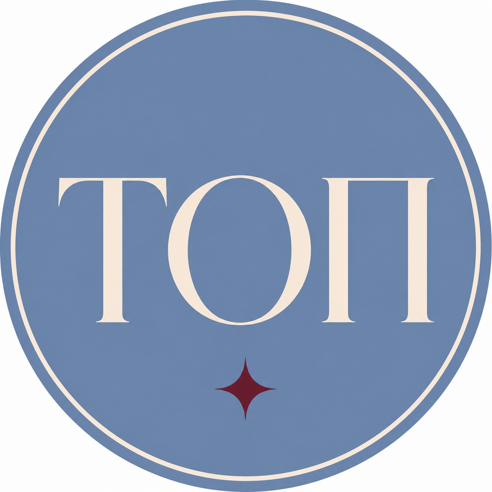
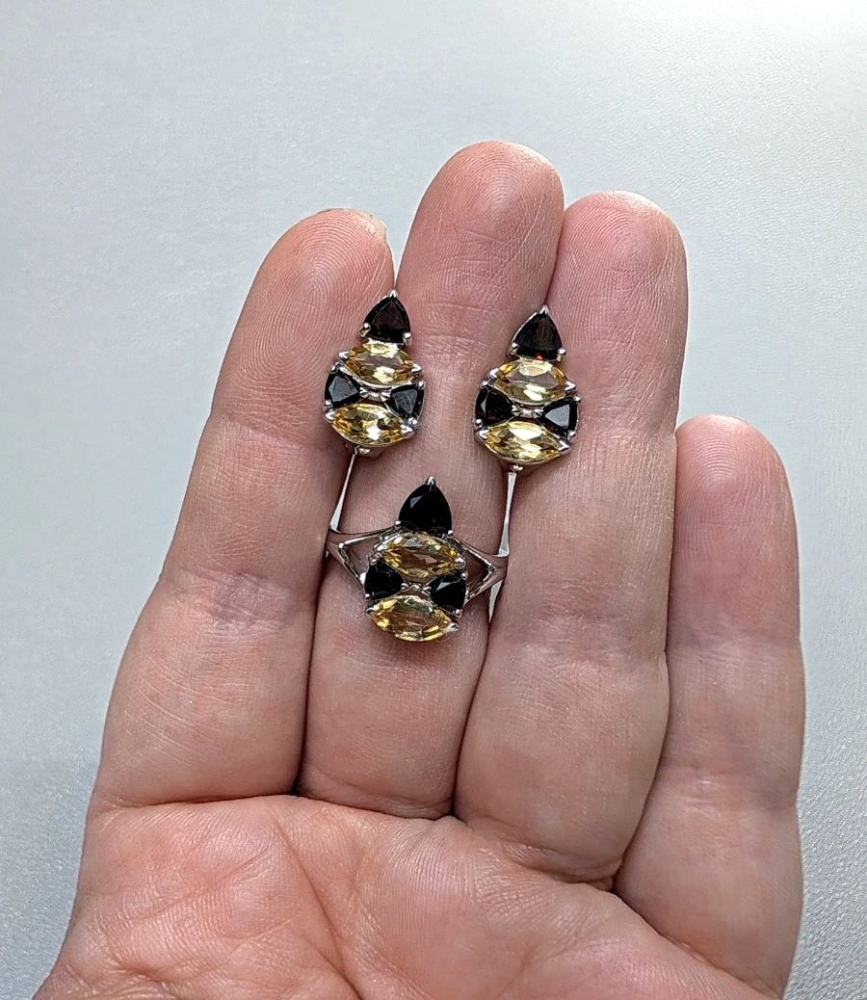
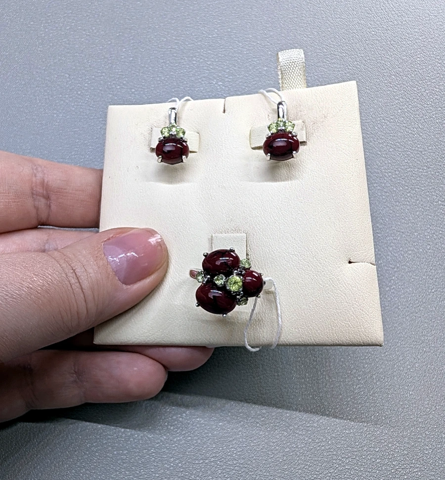
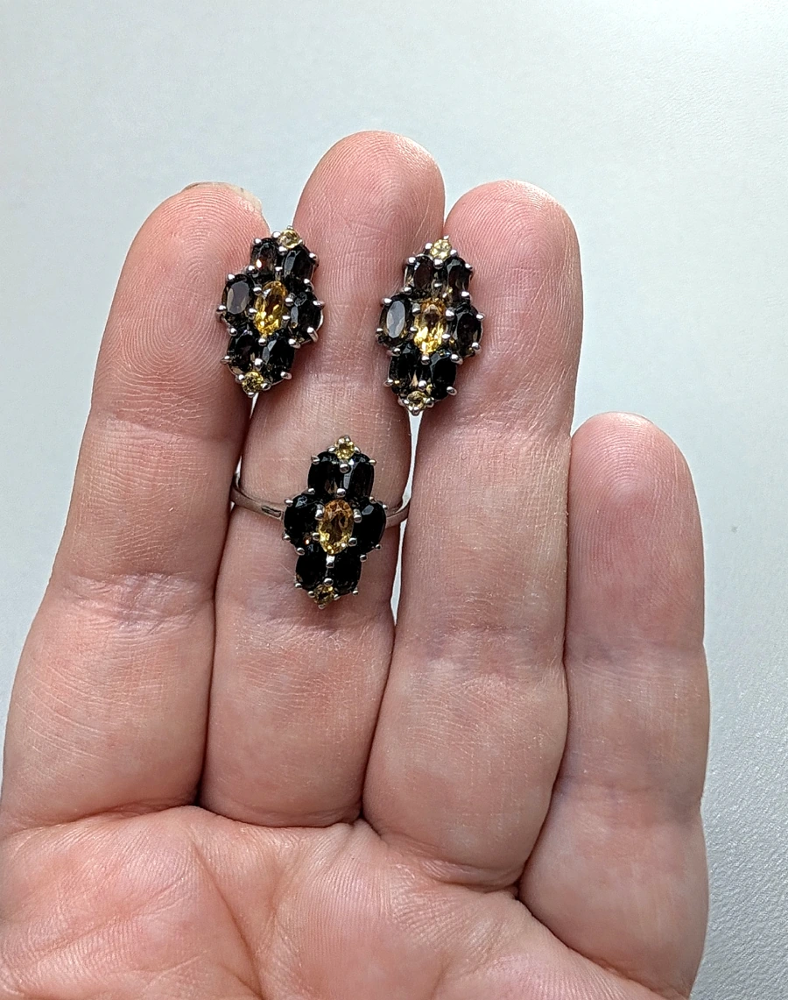

Выберите украшение
Выберите понравившееся украшение в нашем сообществе ВКонтакте или во время прямого эфира.

ТОПУкрашения, в которые хочется влюбляться
ТОП — пространство для тех, кто любит украшения
Мы знакомим вас с коллекциями ювелирных производителей, находим интересные украшения и помогаем приобретать их на привлекательных условиях.
Сообщество закрытое. Вступление — по заявке.
О нас
ТОП — это пространство для тех, кто любит украшения, ценит необычный дизайн, красивые камни и удовольствие от выбора.
В нашем ассортименте серебряные украшения с натуральными камнями и другими вставками, а также изделия без вставок.
Основная площадка нашего сообщества — vk.com/top.jewelry. Здесь мы знакомим с новыми коллекциями, проводим прямые эфиры, показываем украшения в деталях и принимаем заказы.
Как оформить заказ
Выберите понравившееся украшение в нашем сообществе ВКонтакте или во время прямого эфира.
Напишите в сообщения сообщества, указав выбранное изделие и необходимые характеристики, например размер кольца.
Мы уточним наличие, стоимость и ориентировочные сроки поставки. После согласования направим ссылку для безопасной онлайн-оплаты.
После поступления товара согласуем удобный способ доставки или личной передачи в Санкт-Петербурге.
Украшения
На фото в каждой карточке показан сет: серьги + кольцо. Позиции можно заказать по отдельности.

Тёплое сияние цитринов и выразительные гранаты — эффектный серебряный сет для яркого акцента.

Насыщенный коралл и свежие зелёные хризолиты создают заметный, живой и очень выразительный сет.

Контрастный серебряный сет с глубокими раух-топазами и солнечными цитринами — стильный вариант на каждый день.
Оплата
Доставка
Возврат и обмен
Вы можете отказаться от заказа в любое время до его получения, а после получения — в течение 7 дней.
Возврат товара надлежащего качества возможен при сохранении его товарного вида и потребительских свойств. Для ювелирных изделий также необходимо сохранить потребительскую упаковку.
Если в украшении обнаружен недостаток, возврат или обмен осуществляется в соответствии с законодательством Российской Федерации.
Для оформления возврата свяжитесь с нами через сообщения сообщества ВКонтакте или по электронной почте info@top-jewelry.ru. Мы поможем согласовать удобный способ возврата и сообщим адрес для отправки.
Денежные средства за товар надлежащего качества возвращаются в течение 10 дней со дня предъявления требования, за вычетом предусмотренных законом расходов на доставку возвращённого товара от покупателя.
ТОП
Здесь мы знакомим с новыми коллекциями, проводим прямые эфиры, показываем украшения в деталях и принимаем заказы.
Перейти в сообществоРеквизиты продавца